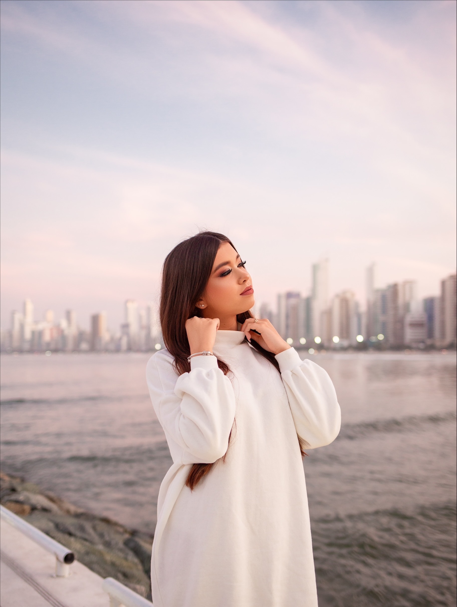

Bem-vindos!
Meu nome é Alice Ferreira e tenho 16 anos de idade. Estudo na escola Senac em São Leopoldo Rs, cursando Técnico em Informática para Internet no primeiro ano do ensino médio. No meu tempo livre gosto de praticar futvôlei, geralmente duas vezes na semana. Além disso, gosto de me maquiar e gravar conteúdos para o Instagram, voltado para moda e dicas de beleza. Tenho alguns artistas nacionais como preferidos, mesmo ouvindo todos os tipos de música, como: Mc Cabelinho, Orochi, Mc Ryan Sp, Veigh e Kayblack. Tenho duas melhores amigas, a Anna Luíza e a Lya Rabello que são como irmãs pra mim. Dou muito muito valor a minha família e amigo
Alice Ferreira Fonseca
Ela/Dela
Front-end
Python
Html
Css